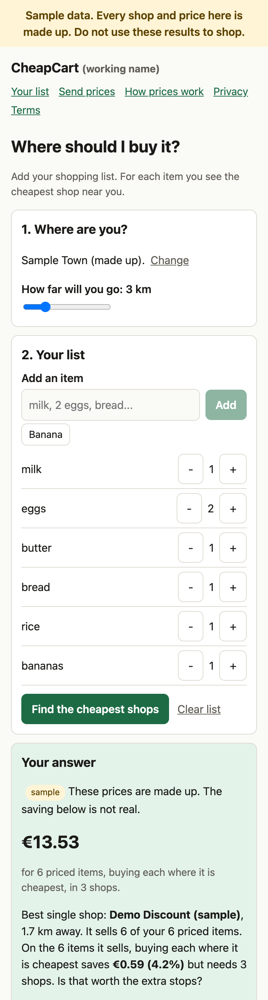
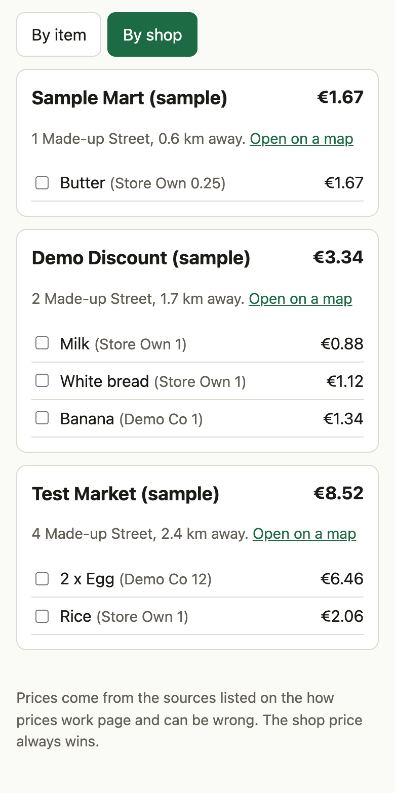
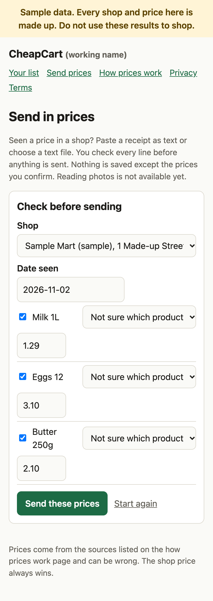

What it does
- Matches each line on your list to an item and finds the cheapest fresh price within the distance you choose.
- Compares per unit (per kg, per litre), inside a narrow size band, so a big pack doesn't win when you wanted a small one.
- Shows how old every price is, and never uses a price past the freshness limit.
- Tells you when an item has no price nearby, instead of hiding it.
- Shows the best single shop next to the per-item answer, so you can decide if the extra stops are worth it.
- Keeps your location out of URLs, logs and storage. No accounts, no tracking cookies.
Prices are ranked by price per unit and nothing else. There is no paid placement and no scraping of any shop.
What it looks like
These are real screenshots of the running app, taken on a phone-sized screen. Every shop and price is marked "sample".



There is no live demo on this page. The app needs a server for its API and its data files, so it can't run as a static site. Run it on your own machine with the steps below, it takes a couple of minutes.
Quick install
You need Node.js 20.9 or newer.
git clone https://github.com/abozaralizadeh/CheapCart.git
cd CheapCart
npm install
npm run devOpen http://localhost:3000, type ST1 as the postcode, add a few items like milk, 2 eggs and bread, and press the button. The sample data is created the first time you run the app.
Run the tests:
npm test
npm run typecheckOn a Debian or Ubuntu server, sudo ./setup_service.sh installs everything, builds the app and runs it as a systemd service. It has not been tried on a real server yet.
Where it stands
| Works now | List, compare, best single shop, results by item and by shop, price import with checks, sent-in prices with a review queue, reports, tests, a setup script, backups. |
|---|---|
| Faked | Prices (made up), receipt photo reading (text only), the database (CSV files). |
| Missing | Real price data, a real launch area, a tested server setup, accessibility testing with a screen reader. |
The roadmap and the design notes are in the repository under docs/.
License
To be decided.